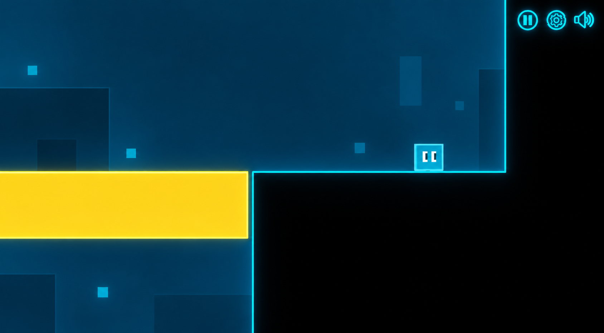
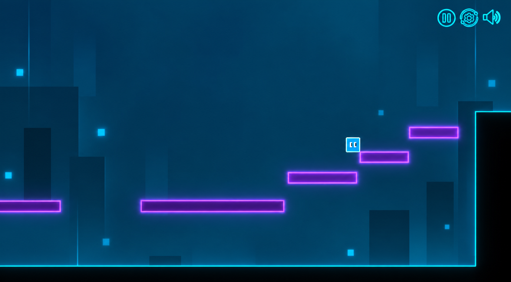
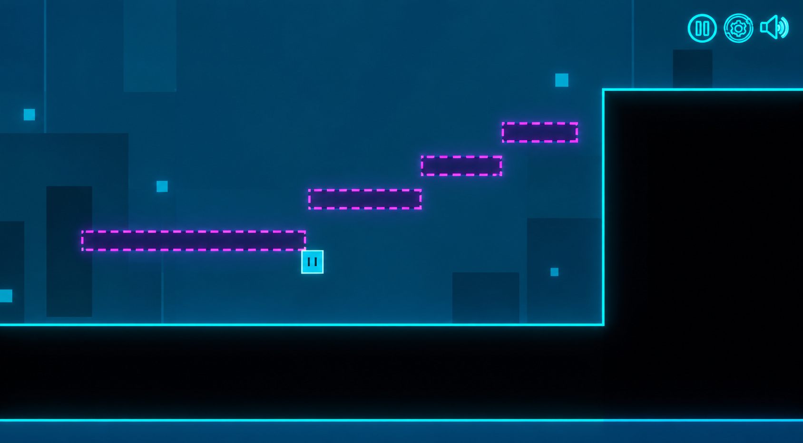

Mundo físico
Las geometrías negras son estables, predecibles y reales. Ofrecen al jugador un lugar seguro desde el que observar, prepararse y actuar.
PLATAFORMAS BCI / BUILD 0.2
BIT es un juego de plataformas 2D que utiliza el movimiento de la cabeza, el parpadeo, y los estados mentales en el juego. El mundo no solo reacciona a lo que haces, reacciona a ti.
BLACK IS REAL · CYAN IS SYSTEM · OTHER ARE MIND
01 / EL JUEGO
Bit es una tímida entidad digital que existe en un mundo que mezcla un mundo físico estable con un mundo de posibilidades. Cada nivel introduce una forma diferente de que el jugador modifique las mecánicas.
Las geometrías negras son estables, predecibles y reales. Ofrecen al jugador un lugar seguro desde el que observar, prepararse y actuar.
Las geometrías violetas se convierten en parte del escenario cuando el jugador está concentrado, abriendo nuevos caminos que antes no existían.
Las geometrías amarillas son lo contrario: se convierten en parte del mundo cuando el jugador se distrae.
02 / INTERACCIÓN
BIT combina los juegos de plataformas tradicionales con input de movimiento o cognitivo. Cada mecánica tiene un papel y se presenta antes de combinarlas todas en el desafío final.
HEAD TRACKING
Mueve tu cabeza de lado a lado para guiar a Bit por el nivel.
PARPADEO
Parpadea para saltar. Bit copia la acción, convirtiendo los gestos del jugador en una nueva forma de jugar.
RELÁJATE
Cuando el jugador se encuentra relajado, Bit se siente más ligero y es capaz de alcanzar plataformas lejanas.
CONCÉNTRATE (O NO)
Tu nivel de concentración determina que plataformas mentales podrá usar Bit para continuar su camino.
03 / Imágenes



04 / TRABAJO FINAL DE MÁSTER
BIT se ha desarrollado como una demostración tecnológica para el Trabajo Final de Máster en Desarrollo de software para aplicaciones móviles en la Universidad de Alicante. El proyecto explora cómo se pueden usar las señales EEG como interacción y cómo pueden adaptarse al gameplay de un videojuego.
El prototipo usa BrainLink Pro para obtener las señales EEG y los sensores del móvil para el seguimiento de la cabeza.
¿LISTO PARA SER TRANSFERIDO?